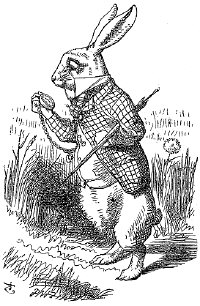
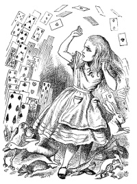
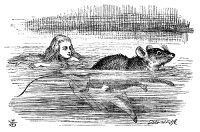
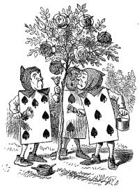

Alice's Adventures in Wonderland
by Lewis Carroll
Down the Rabbit-Hole
Alice was beginning to get very tired of sitting by her sister on the bank, and of having nothing to do: once or twice she had peeped into the book her sister was reading, but it had no pictures or conversations in it, and what is the use of a book
, thought Alice without pictures or conversation?
So she was considering in her own mind (as well as she could, for the hot day made her feel very sleepy and stupid), whether the pleasure of making a daisy-chain would be worth the trouble of getting up and picking the daisies, when suddenly a White Rabbit with pink eyes ran close by her. There was nothing so VERY remarkable in that; nor did Alice think it so VERY much out of the way to hear the Rabbit say to itself, Oh dear! Oh dear! I shall be late!
(when she thought it over afterwards, it occurred to her that she ought to have wondered at this, but at the time it all seemed quite natural); but when the Rabbit actually TOOK A WATCH OUT OF ITS WAISTCOAT- POCKET, and looked at it, and then hurried on, Alice started to her feet, for it flashed across her mind that she had never before seen a rabbit with either a waistcoat-pocket, or a watch to take out of it, and burning with curiosity, she ran across the field after it, and fortunately was just in time to see it pop down a large rabbit-hole under the hedge.
The Pool of Tears
As she said these words her foot slipped, and in another moment, splash! she was up to her chin in salt water. He first idea was that she had somehow fallen into the sea, 'and in that case I can go back by railway,' she said to herself. (Alice had been to the seaside once in her life, and had come to the general conclusion, that wherever you go to on the English coast you find a number of bathing machines in the sea, some children digging in the sand with wooden spades, then a row of lodging houses, and behind them a railway station.) However, she soon made out that she was in the pool of tears which she had wept when she was nine feet high. It was high time to go, for the pool was getting quite crowded with the birds and animals that had fallen into it: there were a Duck and a Dodo, a Lory and an Eaglet, and several other curious creatures. Alice led the way, and the whole party swam to the shore.
A Caucus-Race and a Long Tale
Alice thought the whole thing very absurd, but they all looked so grave that she did not dare to laugh; and, as she could not think of anything to say, she simply bowed, and took the thimble, looking as solemn as she could. The next thing was to eat the comfits: this caused some noise and confusion, as the large birds complained that they could not taste theirs, and the small ones choked and had to be patted on the back. However it was over at last, and they sat down again in a ring, and begged the Mouse to tell them something more.
The Queen's Croquet-Ground
First came ten soldiers carrying clubs; these were all shaped like the three gardeners, oblong and flat, with their hands and feet at the corners: next the ten courtiers; these were ornamented all over with diamonds, and walked two and two, as the soldiers did. After these came the royal children; there were ten of them, and the little dears came jumping merrily along hand in hand, in couples: they were all ornamented with hearts. Next came the guests, mostly Kings and Queens, and among them Alice recognised the White Rabbit: it was talking in a hurried nervous manner, smiling at everything that was said, and went by without noticing her. Then followed the Knave of Hearts, carrying the King's crown on a crimson velvet cushion; and, last of all this grand procession, came THE KING AND QUEEN OF HEARTS.